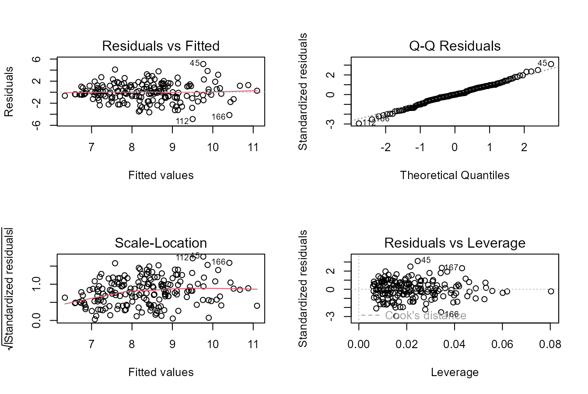

Diagnostics, heteroscedasticity and influential observations
Source:vignettes/v02-diagnostics-influence.Rmd
v02-diagnostics-influence.RmdWhy diagnostics come before selection
A regression coefficient is meaningful only relative to the fitted specification and the observations that support it. Diagnostics therefore come before automated selection. This vignette separates four issues: functional form, residual variance, unusual response values and unusual predictor combinations.
Example 1: a well-behaved soil model
soil <- mr_example_data("soil_fertility")
fit_soil <- mr_fit(
yield_t_ha ~ soil_pH + organic_matter_pct + available_P_mg_dm3 +
exchangeable_K_mg_dm3 + soil_moisture_pct + season_rain_mm,
soil
)
d1 <- mr_diagnose(fit_soil)
d1$fit
#> n p effective_rank residual_df R2
#> 180.0000000 6.0000000 7.0000000 173.0000000 0.4172291
#> adjusted_R2 sigma AIC BIC
#> 0.3970174 0.5765153 321.4069086 346.9505634
d1$heteroscedasticity
#> statistic df p.value
#> 2.0356170 6.0000000 0.9163939
d1$specification
#> statistic df1 df2 p.value
#> 1.0771136 2.0000000 171.0000000 0.3428764Normality, heteroscedasticity and functional form are different questions. Normal residuals do not guarantee constant variance, and constant variance does not guarantee that the conditional mean is correctly specified.
Example 2: intentionally heteroscedastic agronomic data
het <- mr_example_data("agronomy_heteroskedastic")
fit_het <- mr_fit(
grain_yield_t_ha ~ N_rate_kg_ha + P_rate_kg_ha + soil_water_m3_m3,
het
)
d2 <- mr_diagnose(fit_het)
d2$heteroscedasticity
#> statistic df p.value
#> 11.814804618 3.000000000 0.008045251When the mean model remains scientifically reasonable, heteroscedasticity can be handled at the uncertainty level.
inf_classical <- mr_inference(fit_het, "classical")
inf_hc3 <- mr_inference(fit_het, "HC3")
inf_hc4 <- mr_inference(fit_het, "HC4")
inf_classical[, c("term", "std_error", "p_value")]
#> term std_error p_value
#> 1 (Intercept) 0.768754537 1.042091e-04
#> 2 N_rate_kg_ha 0.004509140 5.865936e-10
#> 3 P_rate_kg_ha 0.009986986 7.434635e-03
#> 4 soil_water_m3_m3 2.157881155 2.668304e-02
inf_hc3[, c("term", "std_error", "p_value")]
#> term std_error p_value
#> 1 (Intercept) 0.711992495 2.972332e-05
#> 2 N_rate_kg_ha 0.004400595 2.439879e-10
#> 3 P_rate_kg_ha 0.010447586 1.043899e-02
#> 4 soil_water_m3_m3 2.117699423 2.397224e-02
inf_hc4[, c("term", "std_error", "p_value")]
#> term std_error p_value
#> 1 (Intercept) 0.707156220 2.636945e-05
#> 2 N_rate_kg_ha 0.004366322 1.828232e-10
#> 3 P_rate_kg_ha 0.010371715 9.899421e-03
#> 4 soil_water_m3_m3 2.103886038 2.307557e-02The coefficients are unchanged because the fitted conditional mean has not changed. Only the estimated covariance matrix and resulting uncertainty differ. This distinction is important in agronomic field data, where variance often changes across fertility or water gradients.
Example 3: nonlinear irrigation response fitted linearly
nl <- mr_example_data("irrigation_nonlinear")
fit_lin <- mr_fit(
yield_t_ha ~ irrigation_mm + N_rate_kg_ha + mean_temp_C +
plant_stand_plants_m2,
nl
)
d3 <- mr_diagnose(fit_lin)
d3$specification
#> statistic df1 df2 p.value
#> 1.7211876 2.0000000 163.0000000 0.1820881The specification screen adds squared and cubic powers of fitted values to the linear predictor and evaluates whether they add information. A small p-value is not a command to use a GAM; it is evidence that the current linear functional form deserves inspection.
Visual diagnostics

Residual and influence diagnostic panels for the heteroscedastic teaching dataset.
Residual-versus-fitted plots are often more informative than a single test. Patterns such as a funnel, curvature or systematic bands can point to different problems and therefore different responses.
Influence is multidimensional
i_soil <- mr_influence(fit_soil)
head(i_soil[order(-i_soil$cooks_distance), ], 6)
#> row fitted residual rstandard rstudent leverage cooks_distance
#> 73 73 5.878029 -1.1232495 -2.021454 -2.039838 0.07102695 0.04463235
#> 12 12 6.494224 1.0894235 1.953013 1.969189 0.06381509 0.03714273
#> 128 128 5.642370 -0.9369591 -1.690017 -1.699211 0.07522224 0.03318891
#> 106 106 5.263650 -1.1255596 -2.005380 -2.023230 0.05218840 0.03163349
#> 114 114 6.107488 1.2075520 2.135968 2.158437 0.03838658 0.02601778
#> 179 179 5.614852 -1.3092858 -2.309200 -2.338844 0.03278287 0.02581953
#> dffits max_abs_dfbeta flag_leverage flag_cook flag_dffits flag_dfbeta
#> 73 -0.5640345 0.3595524 FALSE TRUE TRUE TRUE
#> 12 0.5141245 0.4502872 FALSE TRUE TRUE TRUE
#> 128 -0.4846203 0.3159662 FALSE TRUE TRUE TRUE
#> 106 -0.4747568 0.3131832 FALSE TRUE TRUE TRUE
#> 114 0.4312497 0.3217298 FALSE TRUE TRUE TRUE
#> 179 -0.4305889 0.2921588 FALSE TRUE TRUE TRUE
i_plant <- mr_influence(mr_fit(
biomass_g ~ leaf_area_cm2 + chlorophyll_spad + leaf_N_pct +
stomatal_conductance + plant_height_cm + root_mass_g,
mr_example_data("plant_growth")
))
head(i_plant[order(-i_plant$leverage), ], 6)
#> row fitted residual rstandard rstudent leverage cooks_distance
#> 74 74 31.56864 -3.4500400 -2.6760449 -2.7319873 0.10185863 0.1160224150
#> 92 92 22.49267 -0.5299776 -0.4088453 -0.4077298 0.09201196 0.0024198266
#> 111 111 21.67869 0.8964108 0.6882856 0.6870972 0.08344177 0.0061611643
#> 42 42 20.52856 0.2119060 0.1626612 0.1621428 0.08293128 0.0003418114
#> 69 69 21.50928 -0.8778497 -0.6738357 -0.6726288 0.08290223 0.0058635484
#> 24 24 19.23010 0.3754861 0.2880473 0.2871823 0.08178747 0.0010557794
#> dffits max_abs_dfbeta flag_leverage flag_cook flag_dffits flag_dfbeta
#> 74 -0.92003690 0.66056953 TRUE TRUE TRUE TRUE
#> 92 -0.12979399 0.09928953 TRUE FALSE FALSE FALSE
#> 111 0.20731460 0.13379438 FALSE FALSE FALSE FALSE
#> 42 0.04875912 0.02972187 FALSE FALSE FALSE FALSE
#> 69 -0.20223240 0.15546888 FALSE FALSE FALSE FALSE
#> 24 0.08570960 0.05707863 FALSE FALSE FALSE FALSE
i_het <- mr_influence(fit_het)
with(i_het, table(flag_leverage, flag_cook))
#> flag_cook
#> flag_leverage FALSE TRUE
#> FALSE 157 10
#> TRUE 13 0Leverage identifies unusual predictor combinations. Studentized residuals identify unusual responses conditional on predictors. Cook’s distance measures the combined effect of residual size and leverage on the fitted coefficient vector. DFFITS focuses on fitted values, while DFBETAS focus on coefficients. No single measure should dominate interpretation.
Sensitivity analysis rather than deletion
A defensible workflow for a flagged observation is:
- verify the original record and measurement units;
- determine whether the observation belongs to the target population;
- inspect whether its predictor combination is scientifically plausible;
- fit the prespecified model with and without the observation as a sensitivity analysis;
- report materially changed conclusions;
- exclude the observation only with a documented reason independent of the desired result.
The package deliberately does not implement an
auto_remove_outliers() function.
Cluster-robust illustration
het$block <- rep(seq_len(18), length.out = nrow(het))
fit_cluster <- mr_fit(
grain_yield_t_ha ~ N_rate_kg_ha + P_rate_kg_ha + soil_water_m3_m3,
het
)
mr_inference(fit_cluster, "cluster", cluster = "block")
#> term estimate std_error statistic df p_value conf_low
#> 1 (Intercept) 3.05266424 0.775273277 3.937533 17 1.061652e-03 1.416980605
#> 2 N_rate_kg_ha 0.02956894 0.004602735 6.424210 17 6.291320e-06 0.019858015
#> 3 P_rate_kg_ha 0.02704581 0.009549812 2.832078 17 1.150120e-02 0.006897469
#> 4 soil_water_m3_m3 4.82261205 2.227270972 2.165256 17 4.488207e-02 0.123481060
#> conf_high covariance clusters
#> 1 4.68834788 cluster 18
#> 2 0.03927986 cluster 18
#> 3 0.04719415 cluster 18
#> 4 9.52174305 cluster 18This artificial cluster variable demonstrates syntax only. Real cluster-robust inference must use the true independent sampling or experimental units.